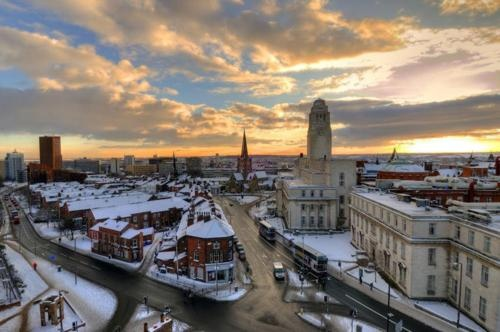

Leeds is a city in the northern English country of Yorkshire. On the south bank of the River Aire, the Royal Armouries houses the national collection of arms and artillery. Across the river, the redeveloped industrial area around Call Lane is farned for bars and live music venues under converted railway arches. Leeds Kirkgate Market features hundreds of indoor and outdoor stalls.
